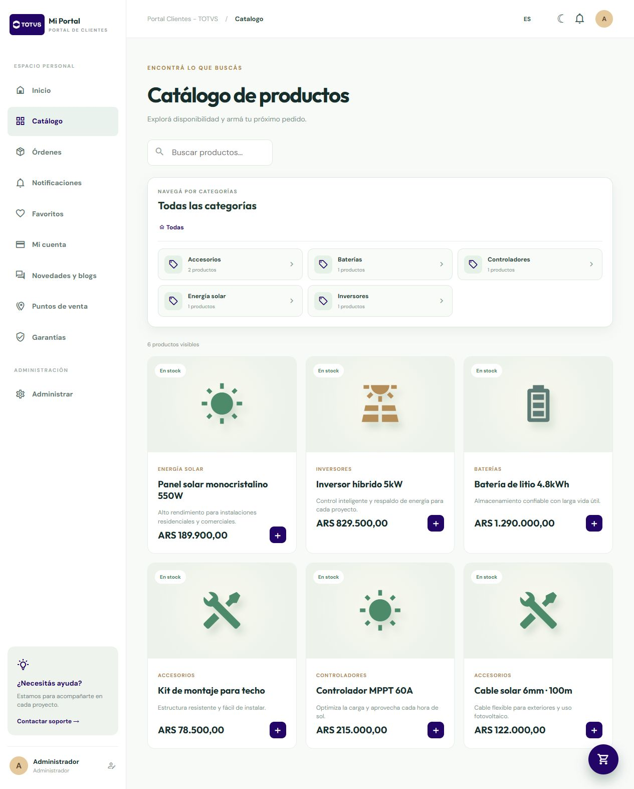
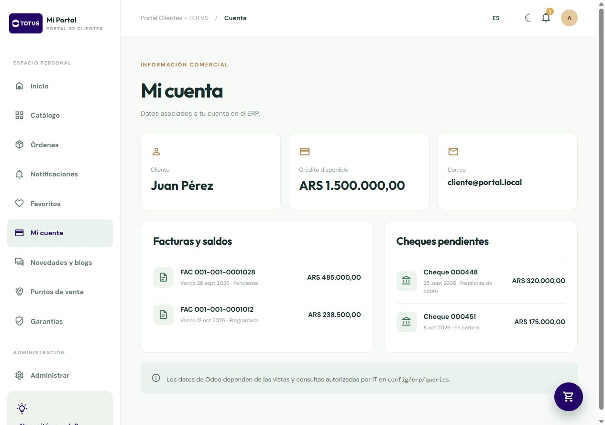

Comprar y seguir
Catálogo, fichas, carrito, pedidos y seguimiento desde un mismo lugar.
Un portal para comprar, consultar pedidos, revisar la cuenta, gestionar garantías y mantener una comunidad conectada con la empresa y el ERP.
Catálogo, fichas, carrito, pedidos y seguimiento desde un mismo lugar.
Crédito, facturas, saldos, cheques y documentación comercial disponible.
Garantías, contenido, proyectos, puntos de venta y comunidad de usuarios.



Productos, precios, promociones, favoritos, pedidos y condiciones por cliente.
Adaptadores para Odoo, TOTVS u otros sistemas sin acoplar el portal a un único ERP.
Garantías, comunicaciones, contenidos, notificaciones y espacios colaborativos.
Contanos el modelo comercial, el ERP actual y qué consultas concentran hoy al equipo.